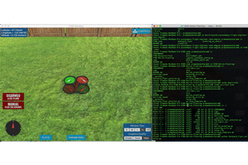
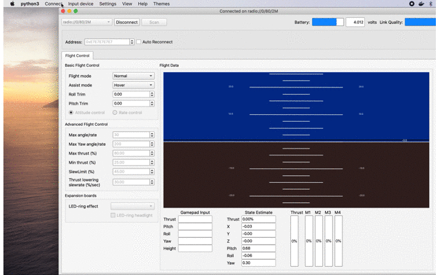

Udacity Flying Car and Autonomous Flight Engineer (FCND) nanodegree starts out with basics of autonomous flight and provides a broad overview of Unmanned Aerial Vehicles (UAVs) and their history. The first project called the Backyard Flyer is designed mostly to understand ways to interact with the simulator though event-driven python code. Event-driven programming deals with asynchronous nature of a drone where the state of the system changes over time and our code should respond to these state changes as they occur.
FCND simulator is a valuable tool used to control and fly a drone in a virtual 3D world. Simulations are critical for UAVs/robotics as they provide a no-risk environment to develop and test out algorithms before deploying them on hardware. Once deployed on hardware, we run the risk of damaging the done or even worse risking the safety of people around the hardware.
For a complete description of the project and the solution, you can refer to the code here. Here is the outcome of the drone flying a predetermined square path on the simulator.

In this post, I will focus on porting this project to work with Crazyflie. Udacidrone API abstraction used to develop this project to work with the simulator supports Crazyflie as one of the platforms. Udacidrone API provides a protocol agnostic API to control a drone in the FCND simulator or other supported hardware such as PX4 powered drone or Crazyflie. So, any code written to work with the simulator should also work for Crazyflie.
Udacidrone and associated tools
For a detailed description of Udacidrone, you can refer to their getting started guide. Here, I will emphasize on essential steps to get basic setup working for communication with Crazyflie.
Software
Clone the repository
git clone https://github.com/pramodatre/FCND-projects-crazyflie-port.gitCreate a virtual environment and activate
This project is tested to work with python 3.6.8 and I recommend using pyenv to manage your python versions if you are using MacOS.
python3 -m venv fcnd
source fcnd/bin/activateInstall all dependencies
pip install git+https://github.com/udacity/udacidrone.gitHardware
It’s assumed that you have followed instructions on setting up Crazyflie2.1. Ensure you have Crazyflie2.1 PA radio plugged-in and the Crazyflie2.1 is turned ON.
Configuration
Launch cfclient (while the virtual environment is activated). You will see the cfclient UI where you can search and connect to your Crazyflie.

cfclient UIOnce connected, it is recommended to change the connection bandwidth from 250k to 2M.

2MChange bandwidth of Crazyflie connection to recommended
2M
Programming paradigm
When writing software using Udacidrone, event driven programming paradigm is leveraged for its ability to capture asynchronous operations. For example, if we would like the drone to take action depending on its position, we would first create a listener to position observations. When position observations are made the position listener is invoked. The position listener can read the current position and decide on its action. One such example in this project is we check if current altitude is “close” to the desired altitude. If so, we start navigation to waypoints.
Simulator to Crazyflie
These instructions were provided as part of the porting instructions in the project. However, for others, who may not have access to the course content, here is the project that works with the simulator. To port backyard_flyer.py to Crazyflie, following modifications are to be implemented:
- Update connection parameters
- Adapt code to work no state callbacks with Crazyfile for takeoff and landing
- Update waypoints that is safe indoor space by reducing the box size
- Update takeoff altitude to something that works indoor
- Update waypoint acceptance thresholds to match new box size
Launch crazyflie_backyard_flyer.py script with the PA radio plugged in to your laptop and Crazyflie switched ON to see it fly a rectangular trajectory.
> python crazyflie_backyard_flyer.py
Logs/TLog.txt
Creating log file
Logs/NavLog.txt
starting connection
Connecting to radio://0/80/2M
Connected to radio://0/80/2M
Waiting for estimator to find position...
Closing log file
takeoff transition
filter has converge, position is good!
waypoint transition
waypoint to navigate to: [0.75 0. 0.5 ]
0.75 0.0 0.5
the delay time for the move command: 2.7578634101417574
vel vector: (0.19966524161618923, -0.01156681850591479, 0)
waypoint transition
waypoint to navigate to: [0.75 0.75 0.5 ]
0.75 0.75 0.5
the delay time for the move command: 4.019526425683314
vel vector: (0.03779849779012415, -0.19639570658446173, 0)
waypoint transition
waypoint to navigate to: [0. 0.75 0.5 ]
0.0 0.75 0.5
the delay time for the move command: 4.781339464967377
vel vector: (-0.19740196558339365, -0.032131977589508295, 0)
waypoint transition
waypoint to navigate to: [0. 0. 0.5]
0.0 0.0 0.5
the delay time for the move command: 4.743249739164866
vel vector: (-0.03620927863315014, 0.19669491132428135, 0)
waypoint transition
landing transition
manual transitionCrazyflie in action

Conclusion
Udacidrone API allows us to write software once and deploy to work with multiple target environments such as FCND simulator, Crazyflie, or any PX4 drone. The tooling is quite mature and thanks to the documentation of Udacidrone API, the project instructions, and Crazyflie setup documentation – you can start making your ideas fly relatively quickly.